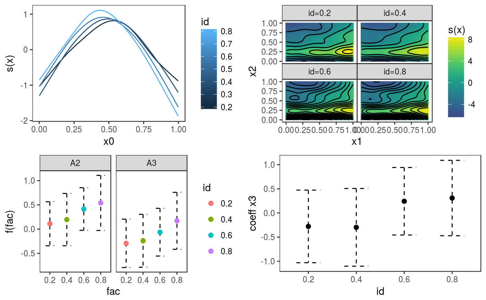

This function is similar to plot.gamViz, but it is used to plot multiple quantile GAM models fitted using mqgamV or mqgam. It allows plotting standards 1D and 2D smooths, and parametric effects, It is basically a wrapper around plotting methods that are specific to individual smooth effect classes (such as plot.multi.mgcv.smooth.1D).
# S3 method for mgamViz plot(x, n = 100, n2 = 40, select = NULL, allTerms = FALSE, ...)
| x | an object of class |
|---|---|
| n | number of points used for each 1-d plot. For a nice smooth plot this needs to be several times the estimated degrees of freedom for the smooth. |
| n2 | square root of number of grid points used for plotting 2D functions effects using contours or heatmaps. |
| select | allows plotting a subset of model terms. For instance, if you just want the plot
for the second smooth term, set |
| allTerms | if |
| ... | other parameters, such as |
An object of class c("plotGam", "gg").
library(mgcViz) set.seed(2) ## simulate some data... dat <- gamSim(1,n=500,dist="normal",scale=2)#> Gu & Wahba 4 term additive modeldat$logi <- as.logical( sample(c(TRUE, FALSE), nrow(dat), replace = TRUE) ) dat$fac <- as.factor( sample(c("A1", "A2", "A3"), nrow(dat), replace = TRUE) ) # Fit GAM and get gamViz object fit <- mqgamV(y ~ fac + s(x0) + s(x1, x2) + x3 + logi, data = dat, qu = c(0.2, 0.4, 0.6, 0.8))#> Estimating learning rate. Each dot corresponds to a loss evaluation. #> qu = 0.4................done #> qu = 0.6........done #> qu = 0.2.........done #> qu = 0.8...............doneprint(plot(fit, select = 1:4, allTerms = T), pages = 1)